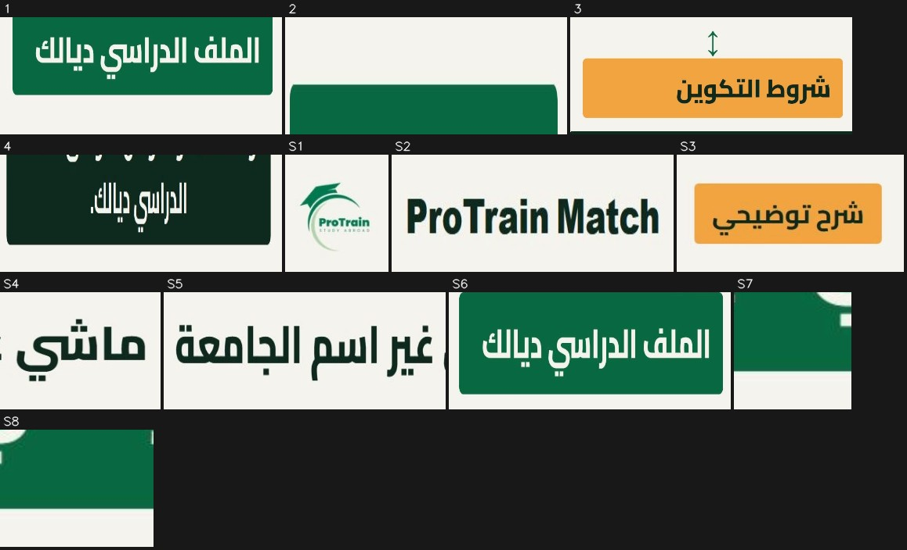
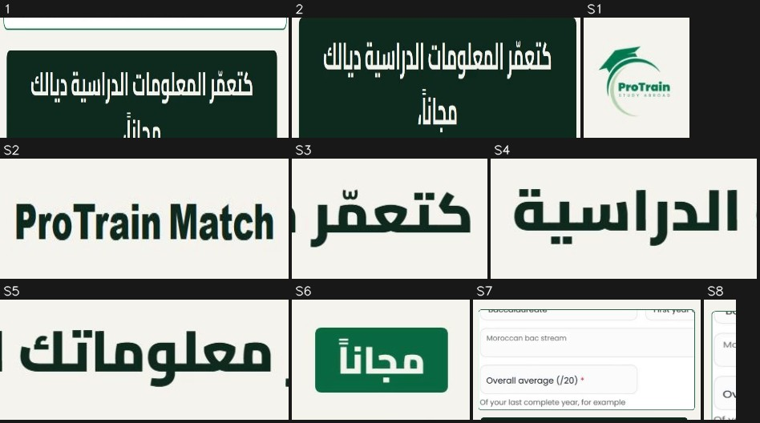
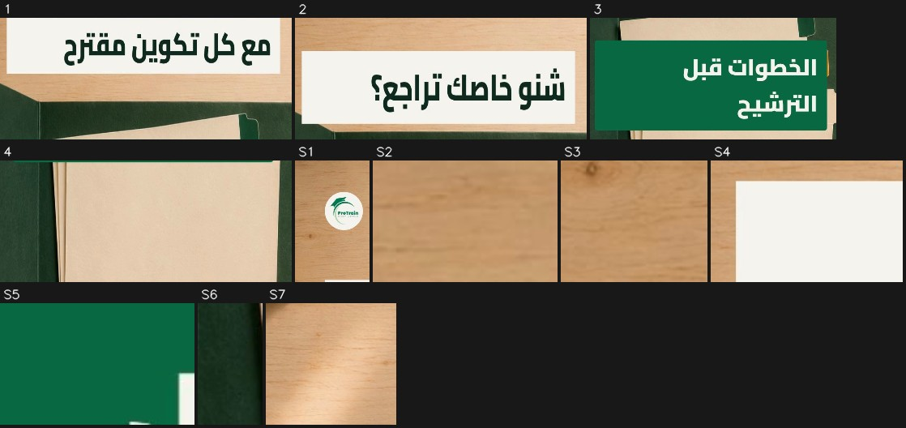
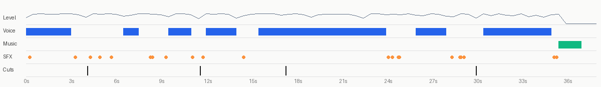

How this video was made: ptm-p001-preview-v2.mp4
How it was made: Mixed production: code / template render 89% + AI-generated video 11%
- 0:38 · vertical 9:16 · 5 shots, 7.6s each on average
- Confidence 70%, based on: tool measurements
- ⚠️ 4 points are uncertain, see “Open questions”
At a glance: picture, packaging, sound
Any short video splits into three layers: the picture, what is laid on top of it (subtitles, styled text, stickers), and the sound. Remake it one layer at a time.
| Layer | In this video | How to make it | Detail |
|---|---|---|---|
| Picture (base) | code / template render 4 shots, AI-generated video 1 shot | AI in 1 generation; screen recording / motion graphics in code | “Remake it yourself” |
| Packaging (on top) | graphic, static sticker, animated sticker / GIF | add in the editor: subtitles, styled text and stickers by the timeline | “Packaging layer” |
| Sound | voice（TTS voice-over）, 21 sound effects | voice: TTS voice-over; effects: add from a library at the listed times | “Sound” |
Content and structure
- The whole video's content was not analysed this time (needs AI image reading); subtitle text is under “Packaging layer”
- No narrative line this time (what each shot is doing in the story needs AI image reading); the “Picture” column of the shot list is a start
Shot list
Picture, Camera and Overlays are what is visible on screen; Made with and Material are the tools' inference, with the basis in the shot-by-shot appendix.
| # | Frames | Time | Length | Picture | Camera | Overlays | Made with (inferred) | Material (inferred) | Remake |
|---|---|---|---|---|---|---|---|---|---|
| 1 | 0:00.0 | 4.1s | — | static | graphic, static sticker | AI-generated video 38% | AI-generated | AI generation · G1 | |
| 2 | 0:04.1 | 7.5s | — | static | — | code / template render 82% | rendered by the creator | code render · Part 1 | |
| 3 | 0:11.6 | 5.7s | — | static | animated sticker / GIF | code / template render 75% | rendered by the creator | code render · Part 1 | |
| 4 | 0:17.3 | 12.7s | — | static | animated sticker / GIF | code / template render 58% | rendered by the creator | code render · Part 1 | |
| 5 | 0:30.0 | 8.0s | — | static | — | code / template render 91% | rendered by the creator | code render · Part 1 |
Remake it yourself: do it in this order
Copy the method and the rhythm, not the pictures.
- Plan the content: go through the shot list, note what each part says, then write your own version
- Collect material: see “What to prepare” below
- Generate: 1 generation, see “AI generation” below
- Screen and motion graphics: see “Code build” below
- Edit: see “Edit” below
- Packaging: the subtitle file
packaging/timeline.jsonimports straight into an editor; styles and timeline under “Packaging layer” - Sound: see “Sound”; every effect can be played first
- Compare: watch yours next to the original: shot lengths, subtitle positions, where the music comes in and drops
What to prepare
@图片1character reference images (one frontal face + one half-body per character) so the look stays consistent across shots
AI generation
1 AI video shot → 1 generation unit, 1 Seedance 2.0 call
- Grouping: AI shots in the same scene joined by hard cuts are generated in one call; ≤15s per call; consecutive hard cuts inside a unit preferably ≤8s, at most 10s; split at dissolves / fades and scene changes
- Audio: the model can generate action sound effects and ambience along with the picture; voice-over is better done as separate TTS and mixed in, so copy and timing stay editable
- Packaging: the sticker on the generated shots is post-production packaging: keep it out of the prompts, erase it from reference frames, and lay it back on from the packaging timeline after generation
- The prompts below are written generically; before generating with Seedance 2.0, rewrite them the way it expects (timing and shots, how references are addressed, dialogue, exclusions):
rea-video models seedance-2.0
A video model can take these inputs; each generation unit below lists which ones to feed and where they come from:
- Text prompt: always; describes the picture, action and camera
- First frame: locks the composition and subject of frame one. Without it this is plain text-to-video and framing changes every time
- Last frame: also locks the final frame so the model only fills in between. Suits a single shot with a camera move or action
- Reference images: how the product and people look, so they stay the same across shots (
@图片1in the prompt) - Reference video: copy the action, camera move and rhythm, not the picture (
@视频1); not every model takes one
One generation per unit. The table lists what to feed the model; open a unit for where each input comes from and the prompt.
| Unit | Shots | Time | Duration | Mode | Feed | Continuity |
|---|---|---|---|---|---|---|
| G1 | #1 | 0.0–4.1s | 4.1s | single shot | first frame + reference image + reference video | — |
G1 · shots #1 · 4.1s · multi-reference generation
| Input | Needed | From | Why |
|---|---|---|---|
| text prompt | yes | see the prompt below | describes picture, action and camera; every other input only constrains it |
| first frame | worth it | source frame shots/shot_001_first.jpg (to change product, person or style, redraw it with an image model from the first-frame prompt below); this model takes frame inputs or references, not both: pass it as one more reference image and write “@图片2 as the first frame” in the prompt (Jimeng's omni-reference accepts this; most APIs do not, drop it if refused) | locks composition, shot size and subject position; with text alone every generation frames it differently |
| last frame | no | — | this unit uses references to keep the product and people; the model takes no last frame alongside them |
| reference image | yes | @图片1 character reference images (one frontal face + one half-body per character) so the look stays consistent across shots | the first frame only fixes frame one; reference images keep the product and people consistent after it |
| reference video | worth it | @视频1 source clip 0.0–4.1s | follow the action, camera move and cutting rhythm; reference only, the picture is not copied |
- Shots #1 have no prompt
Vertical 9:16; backlit / background brighter than subject, hard light (sharp shadow edge), warm (about 3000–4000K), background sharp. Characters follow @图片1. Follow the action, camera movement and cutting rhythm of @视频1. (prompt missing: run --vlm or have the agent write one from the frames)
Code build
One Remotion / HTML project rebuilt from the text tracks and layout (text and UI are 100% controllable; changing copy is a data change). An LLM can write this project directly.
- Part 1: shots #2–#5 (4.1–38.0s)
Remake assets (all in the report folder; hand them over together with the data below to whoever writes the code, or to an LLM):
shots/shot_XXX_first.jpg/_last.jpg: first / last frame of each shot at full size, for layout, type size and marginsshots/shot_XXX_strip.jpg: key frames about every 0.5 s, to follow the animationshots/shot_XXX_elements.jpgand_el_NN.jpg/_st_NN.jpg/_ly_NN.jpg: full-size crop of every element once settled, numbered as in the motion timeline; redraw shapes from them, cut out icons, logos and illustrations that cannot be redrawnpackaging/overlays.ass,packaging/timeline.json: timing, position and colour of the text
How to build the pictures (by the measured picture type):
- vector shapes: SVG shapes + interpolate() / spring() keyframes, positions and timing measured from the frame
- gradients / colour fields: CSS linear / radial gradients, or a few large circles with filter: blur() drifting slowly; glass cards with backdrop-filter
| Shot | Time | Build | Picture | Camera | Colours | On-screen text |
|---|---|---|---|---|---|---|
| #2 | 4.1–11.6s | vector shapes | (to fill from the images: what the elements form and how they move) | static | ground #f4f4ee · #f0a447 #0a6b47 #77a18e #4f5440 | — |
| #3 | 11.6–17.3s | vector shapes | (to fill from the images: what the elements form and how they move) | static | ground #f3f4f0 · #f9fbfe #102b22 #d5dcd8 #aab6b1 | — |
| #4 | 17.3–30.0s | vector shapes | (to fill from the images: what the elements form and how they move) | static | ground #e5c7a9 · #d5ad85 #2a402d #172e20 #096a46 | — |
| #5 | 30.0–38.0s | gradients / colour fields | (to fill from the images: what the elements form and how they move) | static | ground #0a6943 · #eea445 #77a893 #edf0eb #408568 | — |
Per-shot motion timeline (measured: positions in % of frame width / height, colours sampled once the element settles; read together with the key-frame strip)
Motion #2 4.1–11.6s · 4 events
- Ground #f4f4ee; other main colours #f0a447 #0a6b47 #77a18e #4f5440
Element crops (numbers match the motion list below; L = the continuously moving layer mid-shot and at the end, S = elements that never move), full-size files in shots/:

- S1. never moves: shape / text block · x 11%–21%, y 6%–11% · #479379 · crop
- S2. never moves: shape / text block · x 52%–86%, y 8%–11% · #23322b · crop
- S3. never moves: shape / text block · x 63%–88%, y 12%–18% · #f2a440 · crop
- S4. never moves: shape / text block · x 70%–87%, y 20%–25% · #1c2e26 · crop
- S5. never moves: shape / text block · x 25%–69%, y 20%–24% · #1c3027 · crop
- S6. never moves: shape / text block · x 12%–84%, y 31%–39% · #086841 · crop
- S7. never moves: shape / text block · x 33%–38%, y 38%–39% · #086840 · crop
- S8. never moves: shape / text block · x 42%–49%, y 38%–39% · #086840 · crop
- 4.17–4.63s · middle (x 11%–84%, y 32%–41%) · changes, linear · #ccdcd0 · crop
- 4.50–4.63s · top (x 13%–84%, y 29%–30%) · appears, instant · #0d6642 · crop
- 6.17–6.57s · middle (x 11%–84%, y 41%–55%) · appears, linear · #f2a440 · crop
- 8.30–11.23s · middle (x 9%–89%, y 61%–65%) · disappears, ease-in-out · #cfd2ce · crop


Motion #3 11.6–17.3s · 2 events
- Ground #f3f4f0; other main colours #f9fbfe #102b22 #d5dcd8 #aab6b1
Element crops (numbers match the motion list below; L = the continuously moving layer mid-shot and at the end, S = elements that never move), full-size files in shots/:

- S1. never moves: shape / text block · x 11%–21%, y 6%–11% · #469378 · crop
- S2. never moves: shape / text block · x 52%–86%, y 8%–11% · #23322b · crop
- S3. never moves: shape / text block · x 68%–87%, y 15%–20% · #132920 · crop
- S4. never moves: shape / text block · x 10%–36%, y 16%–20% · #132920 · crop
- S5. never moves: shape / text block · x 37%–67%, y 16%–20% · #132920 · crop
- S6. never moves: shape / text block · x 69%–88%, y 26%–31% · #096841 · crop
- S7. never moves: shape / text block · x 8%–91%, y 32%–55% · #ccdcd3 · crop
- S8. never moves: shape / text block · x 8%–13%, y 32%–51% · #b8c7bd · crop
- Continuous layer: 2% of the frame moves through the whole shot (x 9%–62%, y 32%–54%), e.g. drifting gradients, particle flow, breathing glow
- 14.20–14.27s · middle (x 9%–89%, y 55%–61%) · appears, instant · #0f2a20 · crop
- 17.27–17.33s · middle (x 9%–87%, y 57%–62%) · changes, instant · #ccd2cd · crop


Motion #4 17.3–30.0s · 4 events
- Ground #e5c7a9; other main colours #d5ad85 #2a402d #172e20 #096a46
Element crops (numbers match the motion list below; L = the continuously moving layer mid-shot and at the end, S = elements that never move), full-size files in shots/:

- S1. never moves: shape / text block · x 0%–22%, y 0%–20% · #f1f1e6 · crop
- S2. never moves: shape / text block · x 25%–30%, y 0%–2% · #bd8f61 · crop
- S3. never moves: shape / text block · x 4%–10%, y 14%–16% · #c09262 · crop
- S4. never moves: shape / text block · x 8%–24%, y 21%–25% · #f6f3ee · crop
- S5. never moves: shape / text block · x 33%–42%, y 40%–41% · #086841 · crop
- S6. never moves: shape / text block · x 20%–22%, y 61%–64% · #1a301f · crop
- S7. never moves: shape / text block · x 9%–26%, y 91%–100% · #f2cca7 · crop
- In sequence: 3 same-size elements, 3.57s apart, about 0.07s each (items 1, 2, 4 below)
- 22.63–22.70s · top (x 9%–89%, y 21%–32%) · changes, instant · #cfa77d · crop
- 27.03–27.10s · top (x 9%–89%, y 19%–29%) · changes, instant · #ecd9ca · crop
- 27.03–27.10s · middle (x 11%–87%, y 35%–54%) · changes, instant · #086841 · crop
- 29.77–29.83s · middle (x 9%–89%, y 55%–62%) · changes, instant · #e5cbb0 · crop


Motion #5 30.0–38.0s · 2 events
- Ground #0a6943; other main colours #eea445 #77a893 #edf0eb #408568
Element crops (numbers match the motion list below; L = the continuously moving layer mid-shot and at the end, S = elements that never move), full-size files in shots/:
- S1. never moves: shape / text block · x 8%–22%, y 5%–12% · #f5f3ee · crop
- S2. never moves: shape / text block · x 49%–88%, y 7%–12% · #f6f3ee · crop
- S3. never moves: shape / text block · x 8%–88%, y 17%–27% · #f2a440 · crop
- S4. never moves: shape / text block · x 68%–86%, y 34%–39% · #daf4e9 · crop
- S5. never moves: shape / text block · x 10%–31%, y 35%–39% · #d8f5e4 · crop
- S6. never moves: shape / text block · x 32%–52%, y 35%–39% · #d7f5e7 · crop
- S7. never moves: shape / text block · x 28%–68%, y 43%–47% · #b1ddca · crop
- S8. never moves: shape / text block · x 21%–76%, y 49%–54% · #a6ceba · crop
- 30.20–35.67s · middle (x 9%–89%, y 55%–61%) · changes, ease-in-out · #086841 · crop
- 32.53–35.67s · middle (x 9%–89%, y 61%–65%) · changes, ease-in-out · #086841 · crop


Edit
- Cut in the order and lengths of the shot list
- Rhythm: 6.3 cuts per minute, 7.6s average shot; no live-action shots; transitions cut×3, jump cut×1
Cast, scenes and props
- No cast extracted this time (needs AI image reading); shots where the face detector saw a face (person or character): #1
Camera and lighting
- Framing: shot size medium close-up 100%; subject is a face (shot size from face height)
- Camera: fixed camera (tripod / mount / on the desk) 100%
- Lighting: backlit / background brighter than subject. Key light frame left, three-quarter front, at subject height; lighting ratio about 1.4:1 (0.5 stops); hard light (sharp shadow edge); colour temperature warm (about 3000–4000K); background sharp
- (not live footage: the above describes the light in the picture, for generation prompts, not a shooting plan)
- Grade: natural (close to the original colours); normal saturation, normal contrast, normal blacks, overall warm
Per-item measurements and image readings (5)
| Aspect | Item | Verdict | Sources |
|---|---|---|---|
| Framing | shot size | medium close-up | measured |
| Camera | camera support | fixed camera (tripod / mount / on the desk) | measured |
| Lighting | soft / hard | hard light (sharp shadow edge) | measured |
| Lighting | colour temperature | warm (about 3000–4000K) | measured |
| Grade | colour grade | natural (close to the original colours) | measured |
- Note: lighting ratio, soft / hard, colour temperature and shot size are measured on the subject's pixels (the face when there is one, otherwise the in-focus region, which is an estimate); platform transcodes crush the shadows, so hardness and fill read conservative; camera angle, light source, catchlight and rim light follow the image readers. Where measurement and readers disagree, both are listed.
Packaging layer (subtitles / styled text / stickers / sound-effect hits)
- Stickers / GIFs: static sticker / image ×1, animated sticker / GIF ×1
- Possible SFX hits (unconfirmed signal candidates) on: sticker in ×2
- 1 persistent layers (unchanged across cuts: lay each on once for its span, not per shot): animated sticker / GIF 11.7–29.9s
- Exports:
packaging/timeline.json(SRT is the subtitle timeline; ASS carries colour, outline, position and entrance animation, swap in the original font; timeline.json is the full timeline)
Stickers / GIFs / picture-in-picture
| Time | Kind | Position | Motion | Confidence | Crop |
|---|---|---|---|---|---|
| 0.30–3.60s | static sticker / image | x5% y54% w80% h9% | static | medium (appears and disappears mid-shot) | |
| 11.70–29.90s | animated sticker / GIF | x40% y54% w45% h6% | animated | medium (unchanged across a cut) |
- 3 more things that pop up in the picture were not counted as stickers (elements appear on their own in 3D / animation / layout shots)
Remake: burn subtitles and styled text in with packaging/overlays.ass (ffmpeg -vf ass=overlays.ass), or rebuild them from timeline.json in CapCut / Remotion; stickers and GIFs need matching assets (meme / GIF libraries), crops are under packaging/.
Sound

- loudness -16.7 dBFS, peak -2.0 dBFS; sound runs across cuts, laid in post as one bed (background changes 5.0dB at cuts vs 15.9dB within shots)
- Sources: Video type: voice-over / talking head + music → voice: TTS voice-over; SFX: added in post from an SFX library / editor (leaning, to confirm)
Voice
- 59% of the duration; pitch about 186.9Hz (gender unclear)
- Source: TTS voice-over (TTS voice-over 64%, human recording 27%, native dialogue from the AI video model 9%)
- Voice and background sound run across cuts: the voice-over was laid on separately in post (TTS or a human voice-over)
- Remake: TTS voice-over: CapCut text-to-speech or another TTS tool, with a similar voice and pace
Music
- No sustained music bed detected
Sound effects (21, all unconfirmed signal candidates)
all 21 sound effects (with audio)
| Time | Listen | Type | Description | On screen | Basis |
|---|---|---|---|---|---|
| 0.24s | pop | static sticker / image appears | static sticker / image appears | signal candidate at a text / sticker pop (low confidence) | |
| 3.27s | ding | — | — | signal candidate (low confidence) | |
| 4.31s | ding | — | — | signal candidate (low confidence) | |
| 4.91s | whoosh | — | — | signal candidate (low confidence) | |
| 5.69s | pop | — | — | signal candidate (low confidence) | |
| 8.29s | pop | — | — | signal candidate (low confidence) | |
| 8.44s | ding | — | — | signal candidate (low confidence) | |
| 9.32s | pop | — | — | signal candidate (low confidence) | |
| 11.10s | pop | — | — | signal candidate (low confidence) | |
| 11.82s | pop | — | animated sticker / GIF appears | signal candidate (low confidence) | |
| 14.50s | whoosh | — | — | signal candidate (low confidence) | |
| 24.15s | ding | — | — | signal candidate (low confidence) | |
| 24.43s | typing | — | — | signal candidate (low confidence) | |
| 24.81s | pop | — | — | signal candidate (low confidence) | |
| 24.89s | pop | — | — | signal candidate (low confidence) | |
| 28.40s | pop | — | — | signal candidate (low confidence) | |
| 28.93s | typing | — | — | signal candidate (low confidence) | |
| 29.01s | pop | — | — | signal candidate (low confidence) | |
| 29.21s | whoosh | — | — | signal candidate (low confidence) | |
| 35.23s | whoosh | — | — | signal candidate (low confidence) | |
| 35.39s | pop | — | — | signal candidate (low confidence) |
- Source: added in post from an SFX library / editor (added in post from an SFX library / editor 57%, generated with the picture by the video model (native audio) 29%, location sound 14%)
- Remake: press “listen” to hear what each one is (cut from the original sound, so voice and music are in it), then take a similar effect from the editor's sound library and place it at that time; “On screen” says what each one lands on
Open questions
- The VLM did not run (No VLM; live action / AI / 3D are told apart from pixel statistics only, so confidence is limited. An agent that can see images: run rea-video review, look at each shot and merge with apply-review; otherwise configure a VLM (any OpenAI-compatible multimodal model, e.g. Gemini / GPT-4o / Doubao / Qwen-VL): set REA_VLM_BASE_URL, REA_VLM_API_KEY and REA_VLM_MODEL (several models comma-separated as fallbacks), then rerun with --vlm): live action / AI / 3D is decided by signal forensics alone; configure a multimodal model and rerun with --vlm, or have an agent review the frames
- Shot #1 (0.0–4.1s): AI or live action, to confirm: only a sharpness rhythm, no duplicate frames (re-encodes leave it too) and no AIGC label, needs an image reader
- Shot #4 (17.3–30.0s): code / template render at only 58% confidence, runner-up ai_video
- No AI listened to the soundtrack: real voice versus TTS is inferred from the waveform; the effects were picked off the mix where the sound jumps, so plosives and drum hits can be counted too. Play the stems and each effect under “Sound” to check
Appendix
Shot by shot
Each shot has two parts: what is visible on screen, and how the tools infer it was made (with the basis); remake prompts last. Folded by default.
#1 00:00.000–00:04.100 · AI-generated video + code / editor overlays (static graphics, static sticker)
Visible on screen (check against the frames)
- Camera / lighting: medium close-up; fixed camera (tripod / mount / on the desk); backlit / background brighter than subject; key light frame left, three-quarter front; lighting ratio about 1.4:1 (0.5 stops); hard light (sharp shadow edge)
How it was made, as inferred by the tools (inferred, not seen)
- Inference: AI-generated video 38%, 3D render 34%, AI avatar (talking head) 16% (deterministic)
- ⚠️ To confirm: AI or live action, to confirm: only a sharpness rhythm, no duplicate frames (re-encodes leave it too) and no AIGC label, needs an image reader
- Material: AI-generated
- Basis (tool measurements, not necessarily visible to the eye):
- Per-frame sharpness oscillates periodically (period 4 frames, correlation 0.98) with no duplicate frames: frame interpolation / rate conversion, or just the rhythm of a re-encode (transcodes whose platform tags were stripped show it too); not enough on its own to call AI
- 100% of sampled frames show a frontal face on a fixed camera, voice on the audio track
- Picture statistics measured only outside the sticker / GIF region (x0% y0% w100% h54%)
- Remake: Source is AI-generated: use the shot's first and last frames for first/last-frame generation to closely match composition and motion; to change the subject, edit the first frame with an image model first
#2 00:04.100–00:11.600 · code / template render
Visible on screen (check against the frames)
- No image description (no VLM or agent image review in this run)
How it was made, as inferred by the tools (inferred, not seen)
- Inference: code / template render 82%, 3D render 10%, screen recording / screenshot 4% (deterministic)
- Material: rendered by the creator
- Basis (tool measurements, not necessarily visible to the eye):
- 87% of adjacent frames are exact duplicates, only local elements move (typical of template / motion-graphics animation, or a hold with local motion)
- Rendered texture: 85% flat colour blocks, 95% of pixels use only 7 colours, 57% axis-aligned edges
- 100% of background pixels never change frame to frame while local elements move: 2D compositing / code-driven motion graphics
- Remake: Code render: rebuild in Remotion / HTML from the text tracks and layout, 100% controllable, no generative model needed
#3 00:11.600–00:17.300 · code / template render + code / editor overlays (animated sticker / GIF)
Visible on screen (check against the frames)
- No image description (no VLM or agent image review in this run)
How it was made, as inferred by the tools (inferred, not seen)
- Inference: code / template render 75%, 3D render 12%, screen recording / screenshot 7% (deterministic)
- Material: rendered by the creator
- Basis (tool measurements, not necessarily visible to the eye):
- 98% of adjacent frames are exact duplicates, only local elements move (typical of template / motion-graphics animation, or a hold with local motion)
- Rendered texture: 81% flat colour blocks, 95% of pixels use only 6 colours, 50% axis-aligned edges
- 98% of background pixels never change frame to frame while local elements move: 2D compositing / code-driven motion graphics
- Remake: Code render: rebuild in Remotion / HTML from the text tracks and layout, 100% controllable, no generative model needed
#4 00:17.300–00:30.000 · code / template render + code / editor overlays (animated sticker / GIF)
Visible on screen (check against the frames)
- Motion beats within the shot: 22.30s, 27.00s
How it was made, as inferred by the tools (inferred, not seen)
- Inference: code / template render 58%, AI-generated video 16%, 3D render 10% (deterministic)
- Material: rendered by the creator
- Basis (tool measurements, not necessarily visible to the eye):
- 88% of adjacent frames are exact duplicates, only local elements move (typical of template / motion-graphics animation, or a hold with local motion)
- 100% of background pixels never change frame to frame while local elements move: 2D compositing / code-driven motion graphics
- Remake: Code render: rebuild in Remotion / HTML from the text tracks and layout, 100% controllable, no generative model needed
#5 00:30.000–00:38.000 · code / template render
Visible on screen (check against the frames)
- No image description (no VLM or agent image review in this run)
How it was made, as inferred by the tools (inferred, not seen)
- Inference: code / template render 91%, screen recording / screenshot 3%, 3D render 2% (deterministic)
- Material: rendered by the creator
- Basis (tool measurements, not necessarily visible to the eye):
- 99% of adjacent frames are exact duplicates, only local elements move (typical of template / motion-graphics animation, or a hold with local motion)
- The picture is large saturated colour fields with almost no material texture (5% fine-texture pixels; footage, AI and 3D renders keep fabric / skin / noise texture): vector / gradient graphics drawn by code
- Rendered texture: 83% flat colour blocks, 95% of pixels use only 10 colours, 51% axis-aligned edges
- 100% of background pixels never change frame to frame while local elements move: 2D compositing / code-driven motion graphics
- Remake: Code render: rebuild in Remotion / HTML from the text tracks and layout, 100% controllable, no generative model needed
Metadata clues
- Encoder:
Lavf61.7.100 - renderer: Remotion
Notes
- Deterministic forensics is reliable on motion, whole-frame pan/zoom, rendered texture and 24→30 fps conversion; telling live action from AI from 3D needs image reading (a VLM or an AI assistant's review), and a look at the frames yourself.
- Platform transcoding usually strips metadata; missing metadata proves nothing.
- The full data is in
breakdown.json; the package for models starts atVIDEO.md.